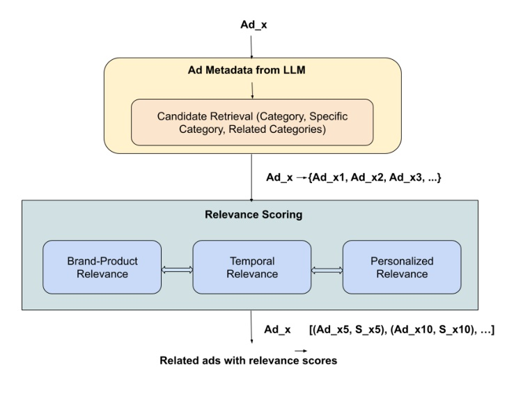
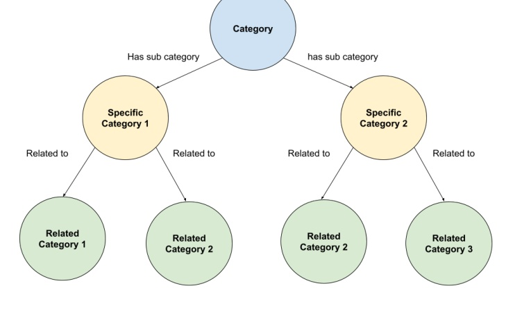
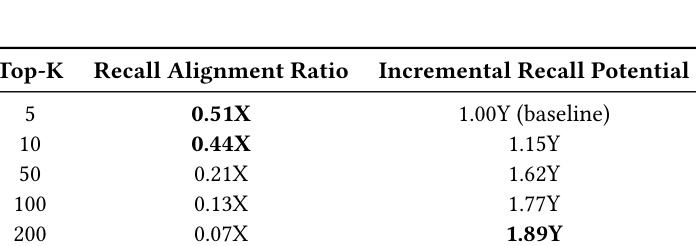
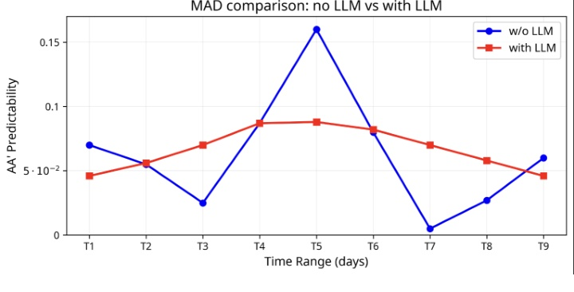

LLM Ad Retrieval：LLM Retrieval for Stable and Predictable Ad Recommendations
这里精读一篇 2026-05-21 公开在 arXiv 的论文《LLM Retrieval for Stable and Predictable Ad Recommendations》。中文可以叫《用于稳定且可预测广告推荐的 LLM 检索》。
论文链接：arXiv:2605.21969 作者：Vinodh Kumar Sunkara 等 机构/团队：Meta Platforms, Inc.。 公开日期：2026-05-21 submitted；arXiv 2605.21969；SIGIR 2026 AgentSearch Workshop，来源：arXiv cs.IR / cs.AI。 代码/项目页：arXiv 页面和 PDF 本轮未核验到独立代码仓库。 本地 PDF：多校-LLMAdRetrieval.pdf。
0. 导读
它把广告推荐的评价从单纯 Recall/NDCG 扩展到 stability 与 predictability，并把 LLM 生成的广告语义属性用于候选生成。对广告系统来说，稳定性本身就是产品体验和投放可信度指标。
Meta 团队提出一个 LLM-based semantic candidate generation framework：先从广告 creative 中抽取层级语义属性，再构图、图遍历并生成候选。论文公开了 Top-K Recall Alignment Ratio、Incremental Recall Potential、A/A difference、MAD 等指标，并报告在线 A/B 验证方向。
从今天的候选池看，这篇论文的价值不只是提出一个模型名，而是把推荐或大模型系统中的一个真实工程矛盾拆开：模型能力、候选边界、证据质量、推理成本和线上稳定性不能只靠单一指标解释。下面按背景、方法、实验、个人理解和复现建议展开。
1. 背景与问题
广告推荐的目标不只是把点击率或转化率做高，还要让投放表现稳定、可解释、可预测。广告主能感知到重复性、冷启动、轻微 creative 改动后的波动和探索不足。如果系统对相似广告给出完全不同候选，或者小改文案导致投放大幅震荡，商业体验会受到影响。
生成式 AI 正在扩大广告库存和 creative 变体数量。传统基于历史点击或转化的召回在新 creative、少曝光广告和语义相似广告上会遇到冷启动。LLM 可以读懂标题、描述、图文和类别，但如果直接让 LLM 在线排序，成本和稳定性都不可控。
这篇论文选择了一个更现实的位置：用 LLM 批量生成广告语义元数据和表示，再基于图遍历做候选扩展。它把 LLM 用作广告语义基础设施，而不是把整个广告推荐系统替换成生成模型。

Figure 1（原文图 1）展示 LLM ad metadata generation 与 Ad-to-Ad relevance scoring 的批处理框架。它说明 LLM 在这里不是在线逐次生成广告，而是离线或批量地把 creative 转成更稳定的语义表示，服务后续候选生成。 放在背景部分看，它说明论文真正要解决的是系统链路中的瓶颈，而不是单纯追求一个更复杂的网络结构。这个图也给后续方法拆解建立了参照：哪些信息应该先保留，哪些信息应该等到任务或候选明确后再使用。
2. 核心方法
方法第一步是 LLM ad metadata generation。系统从广告 creative 中抽取层级类别、属性和语义标签，形成 ad-level representation。论文强调这一步需要分布式批处理和高吞吐 GPU 基础设施，因为广告库存规模大，元数据生成必须可扩展。
第二步是 Ad-to-Ad relevance scoring。LLM 表征被用来衡量广告之间的语义相关性，支持从一个广告或上下文出发找到相近候选。相比只用 sparse id 或历史共现，语义相关性可以覆盖冷启动和低曝光广告。
第三步是 contextual category graph 与 graph traversal。广告被组织进类别图，遍历算法按照上下文类别和属性扩展候选。这个设计让 LLM 输出落到可控图结构上，便于做阈值、去重、质量过滤和稳定性审计。
评价框架也很关键。论文不仅看 Recall@K 和在线 top-line metric，还定义 predictability，即 A/A prime difference，用轻微扰动后的表现差异衡量稳定性，并用 Median Absolute Deviation 量化波动。

Figure 2（原文图 2）是 LLM contextual category graph。广告被映射到类别与属性节点，系统通过图遍历找到语义相近或互补的候选。这个图的重点在于把 LLM 语义从不可控文本输出转成可审计的图结构。 方法图或结果表在这里的作用是把抽象概念落到可实现模块。复现时应优先复刻这些模块之间的输入输出，而不是只记住论文里的缩写。尤其要关注哪些信号是训练期可得、哪些信号是查询或候选确定后才可得，避免把离线信息泄露到线上评估。
3. 实验与结果

Table 1（原文表 1）给出 Top-K Recall Alignment Ratio 和 Incremental Recall Potential。Top-5 的 alignment ratio 较高，Top-200 的 incremental recall potential 更高。这说明 LLM 候选既能在小 K 里和 baseline 高质量候选对齐，又能在大 K 下补充更多语义相关候选。

Figure 3（原文图 3）展示 daily impression relative difference，用于观察系统在每日投放波动上的稳定性。广告系统里这类曲线很重要，因为离线指标好看但日波动大，会影响预算消耗、投放可解释性和广告主信任。
论文还提到在线验证，说明该方法不是纯离线召回实验。不过公开版本对线上业务指标做了归一化处理，没有暴露完整绝对值。因此需要把它视为工业经验论文，而不是可完全复现实验论文。
Table 1 与 Figure 3 对应候选质量和稳定性。Top-K 越小，Recall Alignment Ratio 越集中，说明 LLM 召回的前排候选与 baseline 高质量候选对齐更强；Incremental Recall Potential 随 K 增大而增加，说明它也能补充 baseline 没覆盖的语义邻域。 读这类结果时不能只看最高值，还要看作者控制了哪些变量。若实验同时改变 backbone、特征、数据切分和后处理，就很难判断收益来源；本轮笔记只采纳论文文本能支撑的结论，对未公开的线上绝对指标和未核验代码状态保持保守。
4. 我的理解
这篇论文最值得关注的是评价口径。推荐系统常把准确性当主目标，但广告推荐对稳定性和可预测性更敏感。LLM 语义召回如果只提升 recall，却导致 daily delivery 大幅波动，业务未必接受。
它也给 LLM 在推荐链路里的位置提供了样板：LLM 适合把创意内容结构化、生成语义图和冷启动候选，不适合直接承担毫秒级在线决策。这样的分工比“LLM 端到端推荐”更可信。
风险是语义属性可能固化偏见。LLM 给广告打标签时可能遗漏细分人群、误解创意意图或把相似但商业目标不同的广告连在一起。图遍历越依赖这些标签，错误标签的影响越会扩散。
进一步说，这篇论文可以作为今天两类趋势的交叉样本：推荐系统论文越来越强调候选生成、校准、稳定性和工业链路；LLM 论文越来越强调训练后优化、记忆、检索、推理成本和 runtime。真正值得迁移的不是某个缩写，而是它如何把任务约束写进模型或系统。
5. 工程启发与复现建议
复现不需要一开始用大模型。可以先选一个广告或商品数据集，用 LLM 抽取类别、场景、目标人群、卖点和禁忌标签，构建 item-item 语义图，再和传统共现召回比较覆盖率与稳定性。
评估必须加入扰动测试。对标题、图片描述或属性做轻微改写，观察候选集合和分数是否剧烈变化。推荐系统里的语义召回如果对同义改写过度敏感，线上会出现难以解释的投放波动。
上线时建议把 LLM 召回作为一个可限流的召回路，和传统召回、协同召回、广告主定向召回共同进入融合层。这样可以用增量候选贡献和稳定性指标控制风险，而不是一次性替换主召回。
复现时建议先做最小可控实验，再逐步增加模块。第一版只需要验证核心假设是否成立；第二版再引入论文完整的训练目标、缓存策略或图结构；第三版才考虑线上 A/B。这样可以避免为了复现完整论文而忽略业务里最关键的瓶颈。
6. 局限与风险
- 论文篇幅较短，很多系统细节和在线指标以归一化方式呈现，外部复现难度较高。
- LLM 元数据生成可能受 prompt、模型版本和 creative 语言风格影响，长期稳定性需要版本治理。
- 图遍历候选依赖类别体系质量，若标签层级设计粗糙，会引入大量语义近但商业不相关的广告。
- 广告系统还有预算、竞价、频控、合规和安全约束，论文主要聚焦候选生成与稳定性。
- 轻微扰动指标能衡量 predictability，但不能完全代表广告主实际满意度或长期 ROI。
这些局限不意味着论文没有价值，而是提醒我们把它放进真实系统时需要额外验证。尤其是推荐和 Agent 场景，离线 benchmark 与线上反馈闭环之间通常存在分布差异，任何离线提升都需要经过延迟、成本、隐私、稳定性和可解释性检查。
7. 后续跟进
- 跟进 SIGIR 2026 AgentSearch Workshop 是否放出更完整版本。
- 在商品推荐中复用 A/A prime perturbation 指标，测试 LLM 内容召回稳定性。
- 观察 Meta 或其他广告平台是否公开更多 LLM creative understanding 方案。
- 将语义图候选与传统 ANN embedding 召回做融合实验，重点看增量覆盖和波动。
如果后续出现代码、项目页或会议版本，应优先核验实现细节、数据切分和指标口径。今天的笔记基于 arXiv 页面、PDF 原文和可打开的项目链接状态整理，不把未公开信息写成确定事实。
8. 精读补充：落地检查清单
围绕“广告语义召回、稳定性指标和扰动评估”，我会把这篇论文的后续验证拆成事实核验、最小复现、系统接入和风险监控四层。事实核验层只回答论文到底证明了什么：哪些数据集、哪些指标、哪些 baseline、哪些设置是公开可见的，哪些只是作者在摘要或工业场景中概括的结论。最小复现层只验证一个核心假设，不急着复刻全部模块；如果核心假设在小数据、小模型或离线环境中都不稳定，就没有必要直接进入复杂实现。系统接入层关注输入输出契约，明确哪些信号来自训练期、哪些来自查询时、哪些可以进入在线链路、哪些只能作为离线分析。风险监控层则把失败模式写成指标，例如候选覆盖下降、长尾被压制、证据不忠实、延迟超预算、缓存恢复过多、用户隐私字段泄露等。
这篇论文最适合转成一套广告或商品推荐的稳定性评测。离线复现时，可以先用 LLM 为每个 item 生成类别、卖点、目标人群、场景和禁忌属性，再构建 item-item 语义图。然后对 item 文案做轻微扰动，例如同义改写、增删修饰词、替换图片描述，比较候选集合的 Jaccard、Top-K overlap、分数方差和下游排序波动。只有当语义召回在扰动下保持可预测，同时又能补充传统召回漏掉的候选时，才值得进入线上小流量。广告系统还必须把预算、频控、竞价和合规过滤放在召回之后统一处理，不能因为 LLM 认为语义相似就绕过商业约束。
和今天其他入选论文放在一起看，这篇论文还有一个共同启发：大模型和推荐系统的结合正在从“端到端替换”走向“模块化接入”。推荐侧需要候选边界、行为反馈、广告稳定性和在线成本；LLM 侧需要搜索路径、长期记忆、KV cache 和训练后优化。真正能落地的方案通常不是把所有判断交给一个大模型，而是把大模型产生的语义或推理信号变成可度量、可缓存、可回滚、可审计的中间表示。下一步如果要继续跟进，我会优先看代码是否公开、数据切分是否可复现、指标是否包含稳定性和成本、以及论文里的模块能否独立替换到现有系统中。
9. 精读补充：指标与上线观测
我还会为这篇论文单独设计一组上线前观测指标。第一组是任务主指标，推荐论文看 Recall、NDCG、HitRate、CTR/CVR 或候选增量覆盖，LLM 论文看 Exact Match、证据覆盖、回答忠实性、峰值显存和端到端延迟。第二组是稳定性指标，例如不同随机种子、不同 prompt、不同轻微输入扰动、不同时间窗口下的候选集合和答案是否剧烈变化。第三组是成本指标，包括训练采样次数、推理 token、检索调用数、GPU 显存、P95 延迟和缓存恢复次数。第四组是风险指标，包括隐私字段泄露、历史偏好过期、错误证据改写、长尾 item 被压制、语义标签误分类和线上反馈闭环放大偏差。只有当这四组指标都能解释论文收益来源时，才适合把方法从离线笔记推进到工程试验。
这也是我今天筛选这些论文的主要原因：它们都不只给出一个更高分数，而是提供了一个可以被拆解、监控和复现的系统假设。对推荐系统来说，候选边界、行为证据、广告稳定性和 nearline 特征比“LLM 是否足够强”更关键；对大模型系统来说，搜索路径、长期记忆、KV cache 和证据蒸馏比“上下文是否更长”更关键。后续如果继续读同一方向，我会优先选择那些把这些中间指标公开清楚、并能说明失败案例的论文。
10. 精读补充：广告系统特殊检查
广告推荐还需要额外检查商业约束。LLM 语义召回可能找到内容相似的广告，但这些广告未必有相同预算、投放地域、频控策略、落地页质量或合规状态。因此工程实验必须把 LLM 候选放回完整广告链路里评估，而不是只在语义图上看相似度。最小可行做法是把 LLM 召回作为独立召回路，记录它贡献了哪些 baseline 没有的候选、这些候选是否通过竞价和审核、最终是否稳定消耗预算。这样才能判断它提升的是真实投放效率，还是只制造了更多看似合理但不可投的候选。